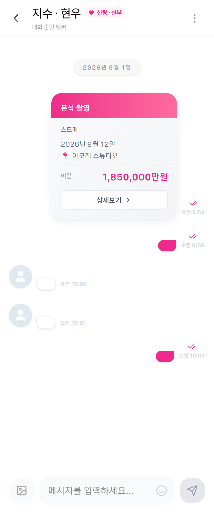

C안 · 08
채팅방
방 이름과 커플 배지가 면으로 올라갑니다. 말풍선은 손대지 않습니다 — 지금도 내 것만 분홍입니다. (처음 이 문서를 쓸 때 하네스 목이 잘못돼 "삭제된 일정입니다"만 찍혀 양쪽 다 회색으로 보였고, 그걸 앱 문제로 적었습니다. 목을 고치고 다시 확인했습니다.)
지금/chat/101 · 실제 캡처

C안내 말풍선이 분홍
지수 · 현우
김박
신랑 · 신부 · 함께 보는 사람 없음
2026년 9월 1일
맞아. 드레스 2벌 포함이래
오전 9:59
현
가격은 185 맞지?
오전 10:00
현
응 3번이 제일 나은 듯
오전 10:01
스드메
본식 촬영
2026년 9월 12일 (토) · 아모레 스튜디오
비용 185만 원
오전 10:02
말풍선은 그대로
지금도 내 것만 분홍입니다(bg-[#ee2b8c]). 이 화면에서
분홍이 "누를 것"이 아니라 "내 것"을 뜻하는 유일한 예외인데,
이미 그렇게 돼 있어 손대지 않습니다.
읽음 표시
말풍선 밖 겹친 체크 대신 시각 옆으로 옮깁니다. 지금은 분홍 체크가 말풍선보다 눈에 띄어 시선을 가져갑니다.
일정 카드 메시지
흰 카드 + 헤어라인으로 낮춥니다. 대화 안에서 다른 종류의 것이라는 신호는 테두리로 충분합니다.
지키는 것
채팅 전송에 권한 검사를 넣지 않습니다 — 함께 보는 사람(READ)도
대화는 합니다. 남의 플랜을 같이 보며 거드는 게 그 권한의 목적입니다.
방을 바꿀 때는 key 로 새로 마운트합니다(같은 인스턴스를
재사용하면 새 방의 히스토리를 안 불러옵니다). 현재 방에 있을 때는
알림 토스트를 띄우지 않습니다.
탭바
채팅방에는 탭바를 두지 않습니다. 지금도 그렇고, 입력창이 있는 화면이라 키보드가 올라오면 둘이 겹칩니다.